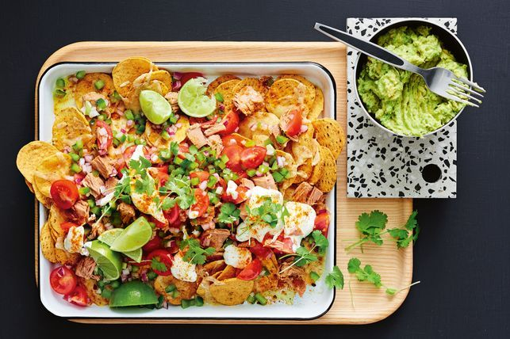

Easy Canned Tuna Nachos

Description
Try this easier nachos, loaded with canned tuna and fresh tomatoes and avocado
Ingredients
- 200g packet round corn chips
- 1 cup grated cheddar
- 3 tsp taco seasoning
- 1 large avocado, halved
- 1 1/2 tbsp lime juice
- 2 x 185g cans tuna in oil, drained, roughly flaked
- 1 small red onion, finely chopped
- 1 small green capsicum, finely chopped
- 250g cherry tomatoes, halved and quartered
- 1/4 cup chopped fresh coriander leaves
- 1/2 cup sour cream
- Lime wedges, to serv
Steps
- Preheat oven to 220C/200C fan-forced. Spread corn chips over
the base of a large baking dish. Sprinkle with cheese and 2 teaspoons
taco seasoning. Bake for 10 to 12 minutes or until cheese is golden and melted.
- Meanwhile, scoop avocado flesh into a bowl. Add lime juice. Using a fork,
mash until almost smooth. Season with salt and pepper.
- Top corn chips with tuna, onion, capsicum, tomato and coriander.
Serve with mashed avocado, lime wedges and sour cream, sprinkled
with remaining taco seasoning